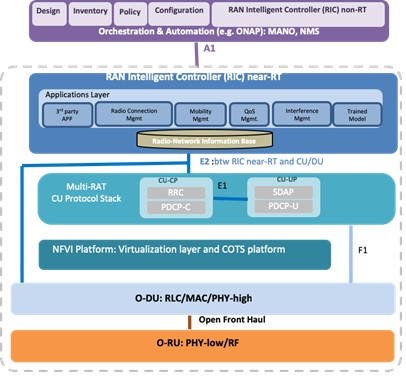

The O-RAN Software Community (OSC) is a collaboration with the O-RAN Alliance and Linux Foundation with the mission to support the creation of software for the Radio Access Network (RAN). The RAN is the next challenge for the open source community and plans to leverage other LF network projects, while address the challenges in performance, scale, and 3GPP alignment.
The telecom industry is experiencing a profound transformation and 5G is expected to radically change how we live, work, and play. This means it's critical to make network infrastructure commercially available as quickly as possible to ensure business success for operators. It's time to turn to open source, as it is one of the most efficient ways to accelerate product development in a collaborative and cost-efficient way.
The O-RAN Software Community is focused on aligning with the O-RAN Alliance's open architecture and specifications to achieve a solution that can be utilized for industry solutions. As a new open source community under the Linux Foundation, the OSC is sponsored by the O-RAN Alliance, and will enable the develop of open source software enabling modular, open, intelligent, efficient, and agile disaggregated radio access networks.
The initial set of software projects being discussed may include: near-real-time RAN intelligent controller (nRT RIC), non-real-time RAN intelligent controller (NRT RIC), cloudification and virtualization platforms, open central unit (O-CU), open distributed unit (O-DU), and a test and integration effort to provide a working reference implementation. These efforts will be looking to work with other adjacent open source networking communities, so the O-RAN Software Community can enable collaborative development across the full operator network stack with strong community alignment.
The community will target an initial release before the end of 2019. It will take multiple releases to fully implement a functional stack. Please join the community in its efforts to open the RAN and leverage software to enrich 5G and beyond solutions for users worldwide.
Please join and check out the effort. Start with joining the mailing list and Technical Oversight Community (TOC) meetings to get started.
